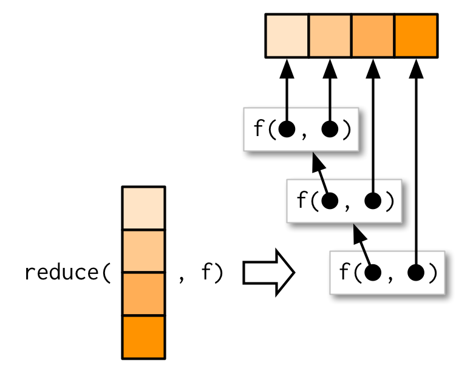
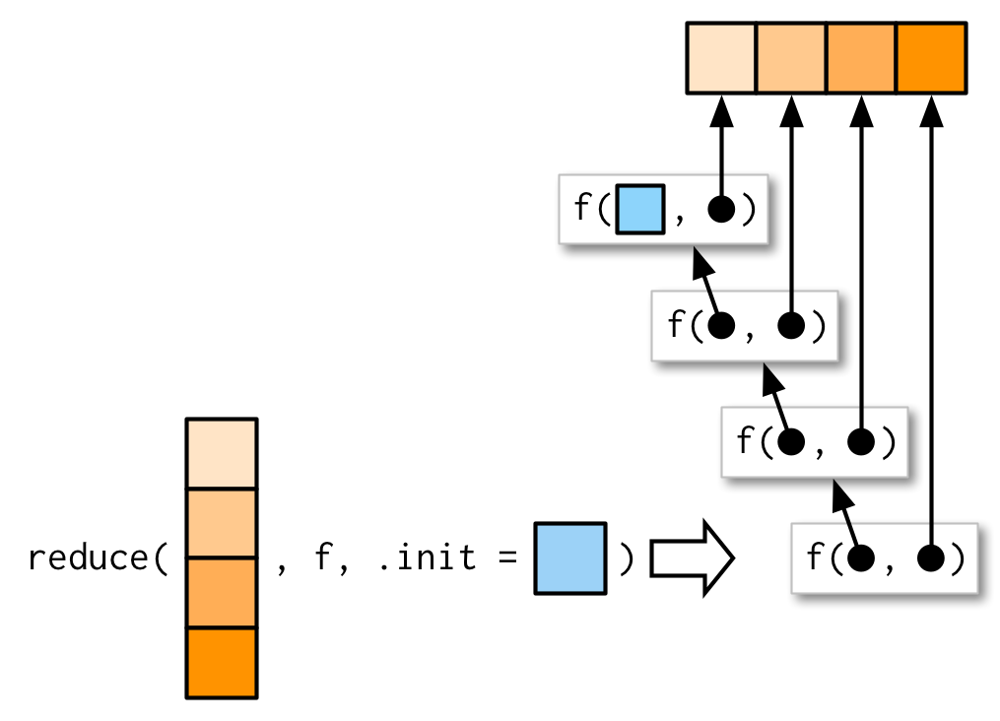

randomise <- function(f) f(runif(1e3))
randomise(mean)
#> [1] 0.5049301
randomise(mean)
#> [1] 0.4924958
randomise(sum)
#> [1] 498.48929 Functionals
Introduction
泛函是一种以函数作为输入，输出向量的函数。下面是一个简单的泛函函数示例：
base R 中常见的apply家族函数就属于泛函，还有purrr包中的map系列函数，以及一些数学泛函——integrate(),optim()。
base R 中的for循环优先级：泛函 > for > while > repeat。如果你对for循环很熟悉，转换到泛函时，只需要从for循环中的提取函数，将其作为参数传入符合要求的泛函即可。当你找不到符合要求的泛函时，首先不要硬适配某种泛函，优先使用for循环，当类似的循环逻辑被重复使用时，考虑编写自己的泛函。
Outline
- 9.2节：介绍
purrr::map()。 - 9.3节：讲解如何使用多个简单的泛函组合解决一个复杂问题，并且讨论purrr系列函数的使用风格。
- 9.4节：介绍18个
purrr::map()变体。 - 9.5节：介绍另外一种风格的泛函——
purrr::reduce()。 - 9.6节：
- 9.7节：介绍 base R 中的泛函。
Prerequisites
本章主要关注purrr包中的泛函，它们有着一致的使用风格，比较容易理解掌握。
library(purrr)My first functional: map()
purrr::map()函数接受一个‘list’或‘atomic vector’（.x）和函数（.f）作为输入，向量中的每个元素会被应用到函数中，最终返回一个list。即：map(1:3, f)等价于list(f(1), f(2), f(3))。
triple <- function(x) x * 3
map(1:3, triple)
#> [[1]]
#> [1] 3
#>
#> [[2]]
#> [1] 6
#>
#> [[3]]
#> [1] 9
这里的map不是“地图”的意思，而是“映射”，意味着‘map’将输入中的向量与结果通过函数进行了映射。
下面是map()函数的核心逻辑：创建一个与输入等长的list，for循环处理向量，并把结果赋给list的元素。
simple_map <- function(x, f, ...) {
out <- vector("list", length(x))
for (i in seq_along(x)) {
out[[i]] <- f(x[[i]], ...)
}
out
}为了提高性能，map()函数其实是用C语言实现的。base R 中的lapply()函数与purrr::map()函数类似，但是lapply()函数不提供下面涉及到的额外功能。
Producing atomic vectors
map()函数结果返回一个list，这赋予了其极大的灵活性，因为任何数据类型都可以储存在list中。但是有时返回的数据类型足够简单，我们无需再使用list储存。purrr 提供了四种特殊的变体函数——map_lgl(),map_int(),map_dbl()和map_chr()——分别返回布尔、整数、浮点数和字符向量。
# map_chr() always returns a character vector
map_chr(mtcars, typeof)
#> mpg cyl disp hp drat wt qsec vs
#> "double" "double" "double" "double" "double" "double" "double" "double"
#> am gear carb
#> "double" "double" "double"
# map_lgl() always returns a logical vector
map_lgl(mtcars, is.double)
#> mpg cyl disp hp drat wt qsec vs am gear carb
#> TRUE TRUE TRUE TRUE TRUE TRUE TRUE TRUE TRUE TRUE TRUE
# map_int() always returns a integer vector
n_unique <- function(x) length(unique(x))
map_int(mtcars, n_unique)
#> mpg cyl disp hp drat wt qsec vs am gear carb
#> 25 3 27 22 22 29 30 2 2 3 6
# map_dbl() always returns a double vector
map_dbl(mtcars, mean)
#> mpg cyl disp hp drat wt qsec
#> 20.090625 6.187500 230.721875 146.687500 3.596563 3.217250 17.848750
#> vs am gear carb
#> 0.437500 0.406250 3.687500 2.812500所有map_*()系列函数要求返回的list长度与输入.x长度一致，所以.f必须返回一个值的结果，否则报错。
pair <- function(x) c(x, x)
map_dbl(1:2, pair)
#> Error in `map_dbl()`:
#> ℹ In index: 1.
#> Caused by error:
#> ! Result must be length 1, not 2.类似的，如果map_*()系列函数要求返回特定类型的值时，.f必须返回该类型的结果，否则报错。
map_dbl(1:2, as.character)
#> Error in `map_dbl()`:
#> ℹ In index: 1.
#> Caused by error:
#> ! Can't coerce from a string to a double.map()函数则没有上面的要求：
map(1:2, pair)
#> [[1]]
#> [1] 1 1
#>
#> [[2]]
#> [1] 2 2
map(1:2, as.character)
#> [[1]]
#> [1] "1"
#>
#> [[2]]
#> [1] "2"在 base R 中，有两个函数类似map_*()系列函数，可以返回原子向量——sapply()和vapply()。作者不建议使用sapply()，因为它会对结果进行整理，导致生成不确定的或向量，或list，或矩阵的结果。相反，vapply()通过参数FUN.VALUE要求用户指定结果的数据类型。例如vapply(x, mean, na.rm = TRUE, FUN.VALUE = double(1))，其等价于map_dbl(x, mean, na.rm = TRUE)。
Anonymous functions and shortcuts
参数.f除提供函数名外，更多的是使用匿名函数或~ f(.x, ...)形式的公式。~ f(.x, ...)在传递其他参数时十分有用，也是最常用的方法。
map_dbl(mtcars, function(x) length(unique(x)))
#> mpg cyl disp hp drat wt qsec vs am gear carb
#> 25 3 27 22 22 29 30 2 2 3 6
map_dbl(mtcars, ~ length(unique(.x)))
#> mpg cyl disp hp drat wt qsec vs am gear carb
#> 25 3 27 22 22 29 30 2 2 3 6~ f(.x, ...)形式的背后是 rlang 支持的lambda表达式。表达式会将map*()系列函数的参数.x解析为f()的第一个参数，参数.y解析为第二个，依次类推.其他map*()系列函数未定义，但函数f()需要的参数会通过...传递。只有一个参数时可以使用.替换.x，但是不建议，.仅作为向下兼容的牺牲写法，会与其他功能的.冲突。
as_mapper(~ length(unique(.x)))
#> <lambda>
#> function (..., .x = ..1, .y = ..2, . = ..1)
#> length(unique(.x))
#> attr(,"class")
#> [1] "rlang_lambda_function" "function"map_*()系列函数可以用来批量提取数据中的某个元素（通过purrr::pluck()函数）。通过name信息，位置信息，或二者组合来提取数据，这在从JSON数据（或R对象）中提取数据时特别有用。
x <- list(
list(-1, x = 1, y = c(2), z = "a"),
list(-2, x = 4, y = c(5, 6), z = "b"),
list(-3, x = 8, y = c(9, 10, 11))
)
# Select by name
map_dbl(x, "x")
#> [1] 1 4 8
# Or by position
map_dbl(x, 1)
#> [1] -1 -2 -3
# Or by both
map_dbl(x, list("y", 1))
#> [1] 2 5 9
# You'll get an error if a component doesn't exist:
map_chr(x, "z")
#> Error in `map_chr()`:
#> ℹ In index: 3.
#> Caused by error:
#> ! Result must be length 1, not 0.
# Unless you supply a .default value
map_chr(x, "z", .default = NA)
#> [1] "a" "b" NA下面是一个提取R t.test 结果对象中P值的示例：
trials <- map(1:100, ~ t.test(rpois(10, 10), rpois(10, 7)))
library(ggplot2)
df_trials <- tibble::tibble(p_value = map_dbl(trials, "p.value"))
df_trials %>%
ggplot(aes(x = p_value, fill = p_value < 0.05)) +
geom_dotplot(binwidth = .01) + # geom_histogram() as alternative
theme(
axis.text.y = element_blank(),
axis.ticks.y = element_blank(),
legend.position = "top"
)
Passing arguments with ...
诚如上述，你可以使用...来传递参数给函数。例如na.rm = TRUE，既可以使用~ f(.x, ...)形式直接传递参数，也可以通过map函数进行传递。
x <- list(1:5, c(1:10, NA))
map_dbl(x, ~ mean(.x, na.rm = TRUE))
#> [1] 3.0 5.5
map_dbl(x, mean, na.rm = TRUE)
#> [1] 3.0 5.5
注意：...传入的参数不会被map函数解析，而是直接传递。map函数的其他变体会对参数进行解析，详见9.4节。

Note
注意：使用~ f(.x, ...)形式直接传递参数和通过map函数进行传递，这两种方式有些许不同。前者会在每次调用函数f时都评估参数，后者只会在map函数中评估一次。当参数需要惰性评估时要特别注意，例如下面的参数是有runif()随机生成。
plus <- function(x, y) x + y
x <- c(0, 0, 0, 0)
map_dbl(x, plus, runif(1))
#> [1] 0.5065563 0.5065563 0.5065563 0.5065563
map_dbl(x, ~ plus(.x, runif(1)))
#> [1] 0.9697664 0.4930660 0.9313660 0.4334680Argument names
当使用...传递参数时，推荐使用参数名称，而不是位置。例如，map(x, mean, trim = 0.1)要比map(x, mean, 0.1)更好。
map()函数的参数有两个——输入Vector，函数。考虑到尽量不与函数需要的参数名冲突，purrr 包分别使用了.x和.f作为参数名。如果使用了x,f（如最前面的simple_map()）作为参数名，那么就可能导致错误。此时只能使用匿名函数的形式来避免冲突。
bootstrap_summary <- function(x, f) {
f(sample(x, replace = TRUE))
}
simple_map(mtcars, bootstrap_summary, f = mean)
#> Error in mean.default(x[[i]], ...): 'trim' must be numeric of length one
# simple_map(mtcars, f = function(x) bootstrap_summary(x, mean))base R 中，也有类似.x和.f的处理，如：
- aplly 系函数使用大写字母
X和FUN作为参数名。 transform()函数参数前使用前缀_。
Varying another argument
考虑下图中的情况：你需要将.x传递给函数的第二个参数，函数的第一个参数是固定的常量。例如你想计算固定向量在不同trim时的均值，mean(x, trim = trims)。

trims <- c(0, 0.1, 0.2, 0.5)
x <- rcauchy(1000)有两种方法可以解决这个问题：
- 使用匿名函数。
map_dbl(trims, ~ mean(x, trim = .x))
#> [1] 0.03016205 0.09579181 0.05505203 0.04010985
map_dbl(trims, function(trim) mean(x, trim = trim))
#> [1] 0.03016205 0.09579181 0.05505203 0.04010985- 使用
mean()函数的参数自动匹配。你需要直到mean()函数的参数名称，
map_dbl(trims, mean, x = x)
#> [1] 0.03016205 0.09579181 0.05505203 0.04010985Purrr style
在介绍其他map变体函数之前，我们先一窥使用purrr风格的函数的示例——数据分组建模，然后抽取模型系数。
# 切分数据
by_cyl <- split(mtcars, mtcars$cyl)
# 创建模型
by_cyl %>%
map(~ lm(mpg ~ wt, data = .x)) %>%
map(coef) %>%
map_dbl(2)
#> 4 6 8
#> -5.647025 -2.780106 -2.192438下面使用 base R 中的函数来实现：
by_cyl %>%
lapply(function(data) lm(mpg ~ wt, data = data)) %>%
lapply(coef) %>%
vapply(function(x) x[[2]], double(1))
#> 4 6 8
#> -5.647025 -2.780106 -2.192438去除管道符：
models <- lapply(by_cyl, function(data) lm(mpg ~ wt, data = data))
vapply(models, function(x) coef(x)[[2]], double(1))
#> 4 6 8
#> -5.647025 -2.780106 -2.192438使用for循环：
slopes <- double(length(by_cyl))
for (i in seq_along(by_cyl)) {
model <- lm(mpg ~ wt, data = by_cyl[[i]])
slopes[[i]] <- coef(model)[[2]]
}
slopes
#> [1] -5.647025 -2.780106 -2.192438有趣的是，从 purr 到 base R 中的 apply 系函数，再到 for 循环，循环函数使用的越少，循环一次做的事情就越多。
Map variants
map系函数主要有23种，从输入与输出两个维度，可以大致划分为下面的表格：
| 输入\输出 | List | Atomic | Same type | Nothing |
|---|---|---|---|---|
| One argument | map() |
map_lgl(), … |
modify() |
walk() |
| Two arguments | map2() |
map2_lgl(), … |
modify2() |
walk2() |
| One argument + index | imap() |
imap_lgl(), … |
imodify() |
iwalk() |
| N arguments | pmap() |
pmap_lgl(), … |
— | pwalk() |
从表格中我们可以看到，除了上面介绍过的map()和map_lgl(), map_int(), map_dbl(), map_chr()，剩余函数可以再划分为5大类：
map2()：支持迭代两个输入。imap()：支持迭代两个输入，其中一个是另外一个的索引。pmap()：支持迭代多个输入。modify()：输出类型与输入相同。walk()：不返回输出。
Same type of output as input: modify()
modify()函数最常见的使用场景就是修改数据框。map()虽然也可以修改数据框中的数据，但其结果是一个list，而modify()函数返回一个数据框。
df <- data.frame(
x = 1:3,
y = 6:4
)
map(df, ~ .x * 2)
#> $x
#> [1] 2 4 6
#>
#> $y
#> [1] 12 10 8
modify(df, ~ .x * 2)
#> x y
#> 1 2 12
#> 2 4 10
#> 3 6 8modify()函数的本质可以用下面的函数表示：
simple_modify <- function(x, f, ...) {
for (i in seq_along(x)) {
x[[i]] <- f(x[[i]], ...)
}
x
}two inputs: map2() and friends
正如9.2节中提到，当你需要迭代两个参数时，map()函数无法满足，需要使用map2()函数。map2()函数对参数的迭代示意图如下：

假设现在需要计算加权平均值，需要同时迭代xs,ws。map_dbl(xs, weighted.mean, w = ws)会报错，map2_dbl(xs, ws, weighted.mean)才是正确用法。
xs <- map(1:8, ~ runif(10))
xs[[1]][[1]] <- NA
ws <- map(1:8, ~ rpois(10, 5) + 1)
map_dbl(xs, weighted.mean, w = ws)
#> Error in `map_dbl()`:
#> ℹ In index: 1.
#> Caused by error in `weighted.mean.default()`:
#> ! 'x' and 'w' must have the same length
map2_dbl(xs, ws, weighted.mean)
#> [1] NA 0.4606237 0.5007349 0.5202646 0.5972615 0.6376652 0.6391361
#> [8] 0.5283167传递额外参数na.rm = TRUE的方式与map()一样。
map2_dbl(xs, ws, weighted.mean, na.rm = TRUE)
#> [1] 0.4510721 0.4606237 0.5007349 0.5202646 0.5972615 0.6376652 0.6391361
#> [8] 0.5283167
map2()函数的本质可以用下面的函数表示：
simple_map2 <- function(x, y, f, ...) {
out <- vector("list", length(x))
for (i in seq_along(x)) {
out[[i]] <- f(x[[i]], y[[i]], ...)
}
out
}map2()函数与simple_map2()函数略微不同的地方是，当.x与.y长度不一致时，map2()会自动将短的向量重复补齐。

No outputs: walk() and friends
map()函数可以存储数据并输出，但有时我们并不需要返回结果，此时可以使用walk()函数。下面是循环打印信息的例子，map()函数返回的是一个都是NULL的list，walk()函数则不返回任何对象。
welcome <- function(x) {
cat("Welcome ", x, "!\n", sep = "")
}
names <- c("Hadley", "Jenny")
# As well as generate the welcomes, it also shows
# the return value of cat()
map(names, welcome)
#> Welcome Hadley!
#> Welcome Jenny!
#> [[1]]
#> NULL
#>
#> [[2]]
#> NULL
walk(names, welcome)
#> Welcome Hadley!
#> Welcome Jenny!walk2()函数通常用来将数据写入到磁盘。
temp <- tempfile()
dir.create(temp)
cyls <- split(mtcars, mtcars$cyl)
paths <- file.path(temp, paste0("cyl-", names(cyls), ".csv"))
walk2(cyls, paths, write.csv)
dir(temp)
#> [1] "cyl-4.csv" "cyl-6.csv" "cyl-8.csv"Iterating over values and indices: imap()
base R 中对向量进行循环时，有三种类型：
- 迭代元素：
for (x in xs) - 迭代元素位置索引：
for (i in seq_along(xs)) - 迭代元素名称索引：
for (nm in names(xs))
map()函数使用的是第一种，imap()函数使用第二种和第三种。imap(x, f)本质上等价于map2(x, names(x), f)或者map2(x, seq_along(x), f)。
imap_chr(iris, ~ paste0("The first value of ", .y, " is ", .x[[1]]))
#> Sepal.Length
#> "The first value of Sepal.Length is 5.1"
#> Sepal.Width
#> "The first value of Sepal.Width is 3.5"
#> Petal.Length
#> "The first value of Petal.Length is 1.4"
#> Petal.Width
#> "The first value of Petal.Width is 0.2"
#> Species
#> "The first value of Species is setosa"x <- map(1:6, ~ sample(1000, 10))
imap_chr(x, ~ paste0("The highest value of ", .y, " is ", max(.x)))
#> [1] "The highest value of 1 is 711" "The highest value of 2 is 923"
#> [3] "The highest value of 3 is 876" "The highest value of 4 is 932"
#> [5] "The highest value of 5 is 944" "The highest value of 6 is 993"Any number of inputs: pmap() and friends
pmap()函数的参数有两个:
.l：参数列表，要求列表中每个元素长度相同，可以看作是一个数据框(data.frame)。.f：函数。
这里要对map()函数中的参数.x = list时作个区分，map()中列表作为整体是一个参数，而pmap()中列表中的每个元素是一个参数。
params <- tibble::tribble(
~n, ~min, ~max,
1L, 0, 1,
2L, 10, 100,
3L, 100, 1000
)
pmap(params, runif)
#> [[1]]
#> [1] 0.4314635
#>
#> [[2]]
#> [1] 41.53247 22.65329
#>
#> [[3]]
#> [1] 761.8707 221.1815 781.8033
map2(x, y, f) 可以等价为pmap(list(x, y), f)。


pmap_dbl(list(xs, ws), weighted.mean)
#> [1] NA 0.4606237 0.5007349 0.5202646 0.5972615 0.6376652 0.6391361
#> [8] 0.5283167
pmap_dbl(list(xs, ws), weighted.mean, na.rm = TRUE)
#> [1] 0.4510721 0.4606237 0.5007349 0.5202646 0.5972615 0.6376652 0.6391361
#> [8] 0.52831679.2.5小节中的情况也可以用pmap()解决。
trims <- c(0, 0.1, 0.2, 0.5)
x <- rcauchy(1000)
pmap_dbl(list(trim = trims), mean, x = x)
#> [1] 0.38134836 0.15561469 0.13479472 0.06358648base R 有两个等价的函数：Map()和mapply()，但是它们都有显著的缺陷。
Map()：你无法提供额外的参数到函数中。mapply()：与sapply()一样，无法保证结果的一致性。
Reduce family
reduce系函数比较小众，不仅只有两种变体，还不常见。但它却为代数或处理大型数据提供了一种强有力的解决方法。
Basics
reduce()函数只接受两个参数：.x和.f。参数.f与map()不同，它要求初始输入.x中的两个元素，返回一个与输入类型相同的结果，然后将本次.f的结果作为下一次调用的输入。即reduce(1:4, f)等价于f(f(f(1,2),3),4)。

reduce()函数的本质可以用下面的函数表示：
simple_reduce <- function(x, f) {
out <- x[[1]]
for (i in seq(2, length(x))) {
out <- f(out, x[[i]])
}
out
}举一个简单的例子：存在一个全是数字类型的列表，你想找到列表中每个元素都包含的数字。
# 生成一个列表
set.seed(123)
l <- map(1:4, ~ sample(1:10, 15, replace = T))
str(l)
#> List of 4
#> $ : int [1:15] 3 3 10 2 6 5 4 6 9 10 ...
#> $ : int [1:15] 3 8 10 7 10 9 3 4 1 7 ...
#> $ : int [1:15] 10 7 5 7 5 6 9 2 5 8 ...
#> $ : int [1:15] 5 9 10 4 6 8 6 6 7 1 ...
# 使用intersect，找出列表中每个元素都包含的数字
out <- l[[1]]
out <- intersect(out, l[[2]])
out <- intersect(out, l[[3]])
out <- intersect(out, l[[4]])
out
#> [1] 10 5 9使用reduce()函数，可以优雅地实现：
reduce(l, intersect)
#> [1] 10 5 9reduce()函数通用支持传入额外参数到.f函数中：
Accumulate
accumulate()函数是reduce()函数的变体，它可以很清除地帮助我们看到reduce()是如何工作地。因为accumulate()函数会返回一个列表，列表中每个元素是.f函数的输出。
accumulate(l, intersect)
#> [[1]]
#> [1] 3 3 10 2 6 5 4 6 9 10 5 3 9 9 9
#>
#> [[2]]
#> [1] 3 10 5 4 9
#>
#> [[3]]
#> [1] 10 5 9
#>
#> [[4]]
#> [1] 10 5 9另外一个理解 reduce 思想地例子是sum()函数：sum(x)可以等价为reduce(x,+)。accumulate(x,+)就等同于累加：
x <- c(4, 3, 10)
reduce(x, `+`)
#> [1] 17
accumulate(x, `+`)
#> [1] 4 7 17.init
在有.init参数时，reduce()的处理逻辑如下：

使用.init参数有两种作用：
- 当
reduce()的输入.x长度为1且没有提供参数.init，那么reduce()会直接返回.x。此时无法对输入类型进行判断，提供了.init参数后，相当于对输入的数据类型做出了规定。
reduce(1, `+`)
#> [1] 1
reduce("a", `+`)
#> [1] "a"
reduce("a", `+`, .init = 0)
#> Error in .x + .y: non-numeric argument to binary operator- 当输入
reduce()的.x长度为0且没有提供参数.init，那么reduce()会直接报错，反之不会。
reduce(integer(), `+`)
#> Error in `reduce()`:
#> ! Must supply `.init` when `.x` is empty.
reduce(integer(), `+`, .init = 0)
#> [1] 0使用reduce()函数一定要考虑到.x数据的长度，和.f函数的返回值类型。
Multiple inputs
极少数情况下，你需要向reduce()函数传递两个参数。例如，当你想将多个数据框进行join，但用于连接的变量.by因元素而异。此时你可以使用reduce2()。
reduce2()的.y参数的长度取决于是否提供.init参数：若.x有4个元素，.f将只被调用3次，.y参数的长度是3，若同时提供.init，.f将被调用4次，.y参数的长度是4。


Map-reduce
你可能听说过 map-reduce, 这是一个为 Hadoop 等技术提供动力的概念。现在你可以看到这个基本概念是多么简单和强大：map-reduce 是一个结合了 reduce 的 map。对于大数据来说，区别在于数据分布在多台计算机上。每台计算机对其拥有的数据执行 map, 然后将结果发送回协调器，该协调器将各个结果 reduce 为单个结果。
作为一个简单的例子，想象计算一个非常大的向量的平均值，这个向量如此之大，以至于必须分配给多台计算机。你可以让每台计算机计算总和和长度，然后将这些数据返回给协调器，由协调器通过将总和除以总长度来计算总平均值。
Predicate functionals
predicate 函数，也叫判断函数，返回值是单一的逻辑值——TRUE或FALSE，例如is.character(),is.null(),all(),any()。
Note
is.na()不符合判断函数的标准，它客户返回一个向量。anyNA()是判断函数，base R 不提供allNA()。
Basics
predicate functionals 就是将判断函数应用到.x中的每个元素，并返回一个逻辑向量。purrr包提过了7个有用的函数，可以分成3组：
some(.x, .p)：如果有任何元素匹配，返回TRUE，类似any(map_lgl(.x, .p))。
every(.x, .p)：如果所有元素匹配，返回TRUE，类似all(map_lgl(.x, .p))。
none(.x, .p)：如果所有元素不匹配，返回TRUE，类似all(map_lgl(.x, negate(.p)))。虽然
any(map_lgl(.x, .p))与some()类似，但前者需要将所有元素都判断后再运行any,后者只要有一个TRUE就返回。detect(.x, .p)：返回.x中第一个匹配的元素。
detect_index(.x, .p)：返回.x中第一个匹配的元素的索引。
keep(.x, .p)：保留所有匹配的元素。
discard(.x, .p)：丢弃所有匹配的元素。
df <- data.frame(x = 1:3, y = c("a", "b", "c"))
detect(df, is.factor)
#> NULL
detect_index(df, is.factor)
#> [1] 0
str(keep(df, is.factor))
#> 'data.frame': 3 obs. of 0 variables
str(discard(df, is.factor))
#> 'data.frame': 3 obs. of 2 variables:
#> $ x: int 1 2 3
#> $ y: chr "a" "b" "c"Map variants
map()和modify()的有接受一个判断函数的变体——判断函数用来过滤.x。
df <- data.frame(
num1 = c(0, 10, 20),
num2 = c(5, 6, 7),
chr1 = c("a", "b", "c"),
stringsAsFactors = FALSE
)
str(map_if(df, is.numeric, mean))
#> List of 3
#> $ num1: num 10
#> $ num2: num 6
#> $ chr1: chr [1:3] "a" "b" "c"
str(modify_if(df, is.numeric, mean))
#> 'data.frame': 3 obs. of 3 variables:
#> $ num1: num 10 10 10
#> $ num2: num 6 6 6
#> $ chr1: chr "a" "b" "c"
str(map(keep(df, is.numeric), mean))
#> List of 2
#> $ num1: num 10
#> $ num2: num 6Base functionals
Matrices and arrays
base R 中的apply()函数存在一些使用上的陷阱，它更多的是用于矩阵的数值计算上。
与
sapply()一样，它无法控制返回值的数据类型，向量？矩阵？列表？apply()函数不是幂等的，这是因为如果汇总函数是标识运算符，则输出并不总是与输入相同。a2d <- matrix(1:20, nrow = 5) a1 <- apply(a2d, 1, identity) identical(a2d, a1) #> [1] FALSE a2 <- apply(a2d, 2, identity) identical(a2d, a2) #> [1] TRUEapply()函数不适合处理数据框。df <- data.frame(x = 1:3, y = c("a", "b", "c")) apply(df, 2, mean) #> Warning in mean.default(newX[, i], ...): argument is not numeric or logical: #> returning NA #> Warning in mean.default(newX[, i], ...): argument is not numeric or logical: #> returning NA #> x y #> NA NA
Mathematical concerns
泛函再数学中广泛存在。泛函的计算方式与迭代密切相关。下面是一些 base R 中的计算函数。
integrate()：计算函数曲线下的面积。uniroot()：求函数f(x)=0的根。optimise()：求函数的最大或最小值。
integrate(sin, 0, pi)
#> 2 with absolute error < 2.2e-14
str(uniroot(sin, pi * c(1 / 2, 3 / 2)))
#> List of 5
#> $ root : num 3.14
#> $ f.root : num 1.22e-16
#> $ iter : int 2
#> $ init.it : int NA
#> $ estim.prec: num 6.1e-05
str(optimise(sin, c(0, 2 * pi)))
#> List of 2
#> $ minimum : num 4.71
#> $ objective: num -1
str(optimise(sin, c(0, pi), maximum = TRUE))
#> List of 2
#> $ maximum : num 1.57
#> $ objective: num 1